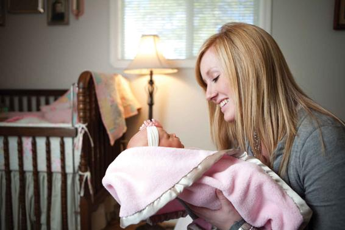

There is a basic flaw in human reasoning that goes something like this: The things that we see before us are inevitable. They are natural and cannot be changed. What sociology teaches us is that, in many ways, we are freer than we think—that the things we think are natural are actually created by human beings. We might consider the question we started this chapter with as an example: The on-campus college experience, with students congregating in large lecture halls and living in dorms, is a social construction located in a specific historic moment. Who would have ever thought that in a matter of weeks the entire system could be transformed? Yet, now we are more aware than ever that many aspects of a college education can actually be undertaken remotely. There is nothing natural about a campus education.
Another example comes from everyday experiences with sex and gender. A baby is usually born with either a penis or a vagina. By way of that characteristic, the baby begins a process of being assigned to the category of “boy” or “girl.” This distinction is extremely important because the baby’s sex is almost always the first thing you want to know before you interact with him or her. If you can’t figure it out, you may ask the parents.
Is this true of any other characteristic? You usually don’t need to know the race of a baby before interacting with him or her. You don’t need to know the economic class of a baby. Most babies today, regardless of their economic standing, are dressed in mass-produced clothes from stores such as Baby Gap or Target. In general, most parents do not try to signal the class of their baby with his or her garments. The same principle applies to race and ethnicity. Some parents will dress their baby to affiliate with a certain race or ethnic group, but—except on holidays—this practice is less commonplace. Not as many people feel they need to know the race of a baby to interact with the infant.
Sex is different. If you are a parent, you do not want someone coming up to your baby boy and asking, “Is it a boy or a girl?” So what do you do to avoid this scenario? You dress your baby in blue if he is a boy or in pink if she is a girl. Some parents do not do this at the beginning—until they start getting asked that question. Then they start dressing their baby in a certain way so that people will stop asking. Of course, even if you do dress your baby in the traditional blue or pink, there may still be people who come up and ask, “Is it a boy or a girl?” But it is not something that will happen often, because most people are pretty good at reading social cues—such as a blue or pink cap.
Now, the fact that many people need to know the sex of a baby suggests that we interact differently depending on whether we think the baby is a boy or a girl. If a baby is a boy, a person might walk up and say something in a traditional masculine style, such as “Hey, bud! How you doin’?” If it’s a girl, the person might say something that is more appropriate for a little girl or more in keeping with the norms of traditional femininity. Eventually, we get to the point where these interactions start to mold the kind of person the baby becomes. Children come to see themselves as being either a boy or a girl. They start to move their bodies like a little boy or a little girl. They know that this is how others see them, and they know that when they go out onto the street, they occupy the role of boy or girl. This happens through a process of interaction.
People interact differently with babies based on the baby’s gender. How do sociologists analyze these interactions?
Even though it is not simply a natural occurrence that a person starts to behave as a boy or a girl, many of us are raised to believe that the differences between men and women are purely biological. Sociologists disagree. Does this mean that sociologists want to dismiss the role of biology? No. The goal of sociology is not to try to teach you that the biological realm is a residual category with a minor role in explaining human behavior. One purpose of sociology is to disentangle what is biological from what is socially constructed. It is in part to try to determine how social phenomena relate to biological phenomena. Most sociologists admit that there is a place for the biological. However, many studies show that the things that the average human being thinks are biological, and thus natural, are actually socially constructed. We will explore several of these issues in later chapters.
The more you start to think about disentangling what is natural from what is socially constructed, the more rigorously you will begin to think like a sociologist.
Social Construction
There is a basic flaw in human reasoning that goes something like this: The things that we see before us are inevitable. They are natural and cannot be changed. What sociology teaches us is that, in many ways, we are freer than we think—that the things we think are natural are actually created by human beings. We might consider the question we started this chapter with as an example: The on-campus college experience, with students congregating in large lecture halls and living in dorms, is a social construction located in a specific historic moment. Who would have ever thought that in a matter of weeks the entire system could be transformed? Yet, now we are more aware than ever that many aspects of a college education can actually be undertaken remotely. There is nothing natural about a campus education.
Another example comes from everyday experiences with sex and gender. A baby is usually born with either a penis or a vagina. By way of that characteristic, the baby begins a process of being assigned to the category of “boy” or “girl.” This distinction is extremely important because the baby’s sex is almost always the first thing you want to know before you interact with him or her. If you can’t figure it out, you may ask the parents.
Is this true of any other characteristic? You usually don’t need to know the race of a baby before interacting with him or her. You don’t need to know the economic class of a baby. Most babies today, regardless of their economic standing, are dressed in mass-produced clothes from stores such as Baby Gap or Target. In general, most parents do not try to signal the class of their baby with his or her garments. The same principle applies to race and ethnicity. Some parents will dress their baby to affiliate with a certain race or ethnic group, but—except on holidays—this practice is less commonplace. Not as many people feel they need to know the race of a baby to interact with the infant.
Sex is different. If you are a parent, you do not want someone coming up to your baby boy and asking, “Is it a boy or a girl?” So what do you do to avoid this scenario? You dress your baby in blue if he is a boy or in pink if she is a girl. Some parents do not do this at the beginning—until they start getting asked that question. Then they start dressing their baby in a certain way so that people will stop asking. Of course, even if you do dress your baby in the traditional blue or pink, there may still be people who come up and ask, “Is it a boy or a girl?” But it is not something that will happen often, because most people are pretty good at reading social cues—such as a blue or pink cap.
Now, the fact that many people need to know the sex of a baby suggests that we interact differently depending on whether we think the baby is a boy or a girl. If a baby is a boy, a person might walk up and say something in a traditional masculine style, such as “Hey, bud! How you doin’?” If it’s a girl, the person might say something that is more appropriate for a little girl or more in keeping with the norms of traditional femininity. Eventually, we get to the point where these interactions start to mold the kind of person the baby becomes. Children come to see themselves as being either a boy or a girl. They start to move their bodies like a little boy or a little girl. They know that this is how others see them, and they know that when they go out onto the street, they occupy the role of boy or girl. This happens through a process of interaction.
Even though it is not simply a natural occurrence that a person starts to behave as a boy or a girl, many of us are raised to believe that the differences between men and women are purely biological. Sociologists disagree. Does this mean that sociologists want to dismiss the role of biology? No. The goal of sociology is not to try to teach you that the biological realm is a residual category with a minor role in explaining human behavior. One purpose of sociology is to disentangle what is biological from what is socially constructed. It is in part to try to determine how social phenomena relate to biological phenomena. Most sociologists admit that there is a place for the biological. However, many studies show that the things that the average human being thinks are biological, and thus natural, are actually socially constructed. We will explore several of these issues in later chapters.
The more you start to think about disentangling what is natural from what is socially constructed, the more rigorously you will begin to think like a sociologist.